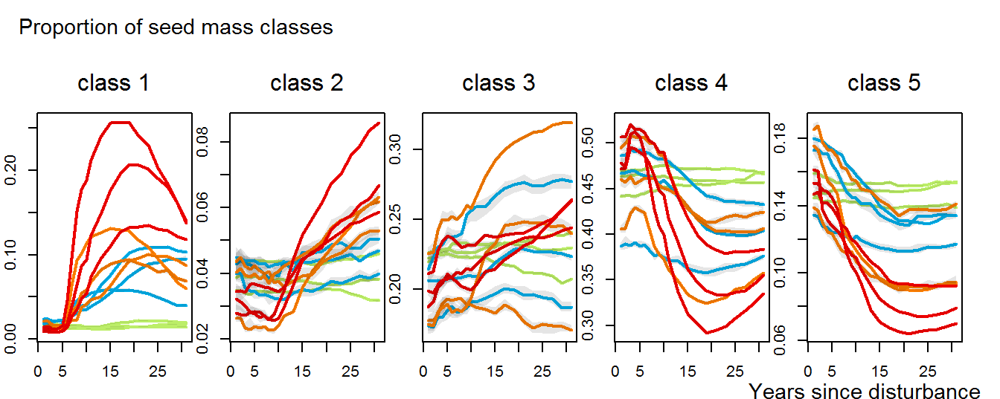

3 Figure A2

Figure 3.1: Trajectories of seed mass classes proportions over 30 years after disturbance, corresponding to the median (solid line) and 0.025 and 0.975 percentile (gray envelope) observed after 50 iteration of the taxonomic uncertainty propagation. No gap filling process was applied in this case. Initial treatments are represented by solid lines colors with green for control, blue for T1,orange for T2 and red for T3.